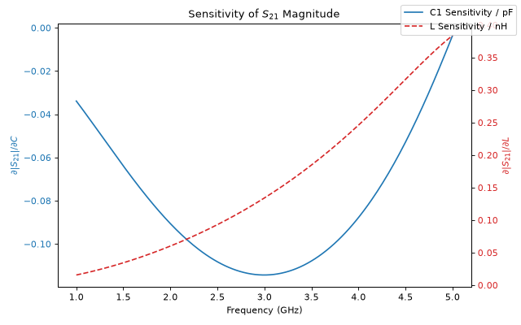
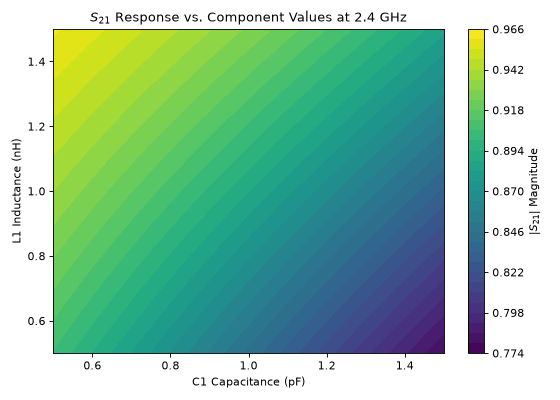

Derivatives and Sweeps
ParamRF provides built-in utilities for the calculation of analytical derivatives, as well as for performing vectorized parameter and function sweeps.
Model Setup
Derivatives and sweeps can be performed across any variable parameters in a model. Let’s set up a base low-pass filter example model with named sub-models and unconstrained parameters:
import pmrf as prf
from pmrf.models import ShuntCapacitor, Inductor, Cascade
c1 = ShuntCapacitor(C=prf.Unconstrained(1.0e-12), name='c1')
l1 = Inductor(L=prf.Unconstrained(1.0e-9), name='l1')
c2 = ShuntCapacitor(C=prf.Unconstrained(1.0e-12), name='c2')
lpf = Cascade([c1, l1, c2])
Scalar Derivatives
To differentiate a model’s parameters, we can pass any differentiable function to pmrf.derivative() alongside its nominal arguments:
import pmrf as prf
freq = prf.Frequency(2.4, 2.4, 1, 'GHz')
def s21_mag(model):
return model.s_mag(freq)[0,1,0]
(derivatives,) = prf.derivative(s21_mag, lpf)
print(f"Sensitivity to C1: {derivatives.at('c1.C').get() * 1e-12:.3f} / pF")
print(f"Sensitivity to L: {derivatives.at('l1.L').get() * 1e-9:.3f} / nH")
Output:
Sensitivity to C1: -0.106 / pF
Sensitivity to L: 0.086 / nH
The value returned by prf.derivative() is a tuple matching the same shape as our input arguments (after unwrapping using pmrf.unwrap()). We can pass in individual parameters, regular JAX arrays, or entire models (as in the above example).
Vector Jacobians
We can also evaluate derivatives/sensitivity across an entire frequency band, known as computing the jacobian:
import jax.numpy as jnp
import matplotlib.pyplot as plt
band = prf.Frequency(1, 5, 201, 'GHz')
def s21_mag_array(c1_val, l_val):
model = ShuntCapacitor(C=c1_val) ** Inductor(L=l_val) ** ShuntCapacitor(C=1.0e-12)
return model.s_mag(band)[:,1,0]
c_nom, l_nom = jnp.array(1.0e-12), jnp.array(1.0e-9)
ds21_dc, ds21_dl = prf.derivative(s21_mag_array, c_nom, l_nom)
In the above example, we passed JAX arrays as opposed to explicitly creating unconstrained parameters. We can plot the results as a function of frequency to visualize their behaviour:
fig, ax1 = plt.subplots(figsize=(8, 5))
ax1.plot(band.f_scaled, ds21_dc * 1e-12, color='tab:blue', label='C1 Sensitivity / pF')
ax1.set_xlabel('Frequency (GHz)')
ax1.set_ylabel(r'$\partial |S_{21}| / \partial C$', color='tab:blue')
ax1.tick_params(axis='y', labelcolor='tab:blue')
ax2 = ax1.twinx()
ax2.plot(band.f_scaled, ds21_dl * 1e-9, color='tab:red', linestyle='--', label='L Sensitivity / nH')
ax2.set_ylabel(r'$\partial |S_{21}| / \partial L$', color='tab:red')
ax2.tick_params(axis='y', labelcolor='tab:red')
plt.title('Sensitivity of $S_{21}$ Magnitude')
fig.legend()
fig.tight_layout()

Parallel Sweeps
We can perform vectorized sweeps using pmrf.sweep(). By default, this is done in a parallel (zip-like) manner across the leading dimension of input JAX arrays. For example, lets sweep \(C_1\) and \(L_1\) simultaneously over a 1D range of values to evaluate the filter’s insertion loss (\(S_{21}\)) at 2.4 GHz:
c_sweep = jnp.linspace(0.5e-12, 1.5e-12, 50)
l_sweep = jnp.linspace(0.5e-9, 1.5e-9, 50)
def eval_s21_mag(c_val, l_val):
model = ShuntCapacitor(C=c_val) ** Inductor(L=l_val) ** ShuntCapacitor(C=1.0e-12)
return model.s_mag(freq)[0, 1, 0]
s21_parallel = prf.sweep(eval_s21_mag, c_sweep, l_sweep)
print(f"Parallel sweep output shape: {s21_parallel.shape}")
Output:
Parallel sweep output shape: (50,)
Grid Sweeps
If we instead want to evaluate the function across every possible combination of inputs, we can pass grid=True. The output will be reshaped into an N-dimensional array corresponding to the swept dimensions. Let’s use this to visualize the \(S_{21}\) magnitude as a 2D surface across our component values:
s21_grid = prf.sweep(eval_s21_mag, c_sweep, l_sweep, grid=True)
fig, ax = plt.subplots(figsize=(7, 5))
C, L = jnp.meshgrid(c_sweep * 1e12, l_sweep * 1e9, indexing='ij')
surface = ax.contourf(C, L, s21_grid, levels=30, cmap='viridis')
fig.colorbar(surface, ax=ax, label='$|S_{21}|$ Magnitude')
ax.set_xlabel('C1 Capacitance (pF)')
ax.set_ylabel('L1 Inductance (nH)')
plt.title('$S_{21}$ Response vs. Component Values at 2.4 GHz')
fig.tight_layout()
